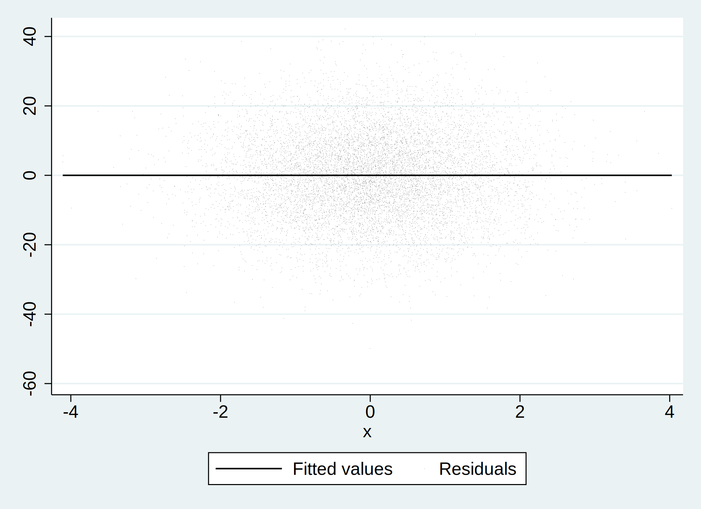
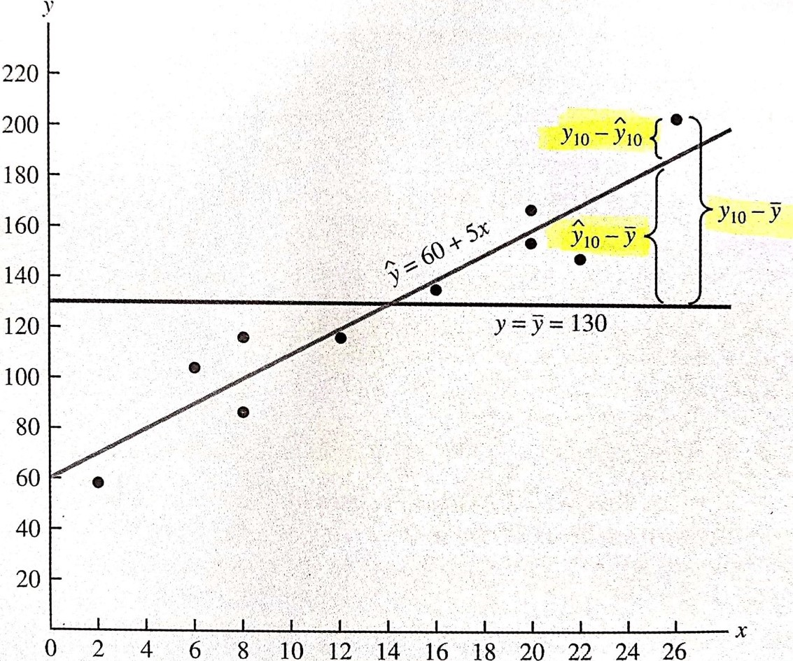
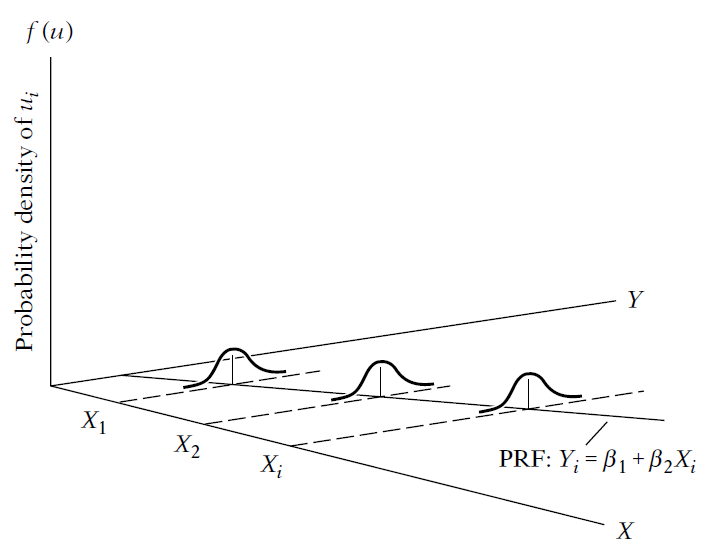
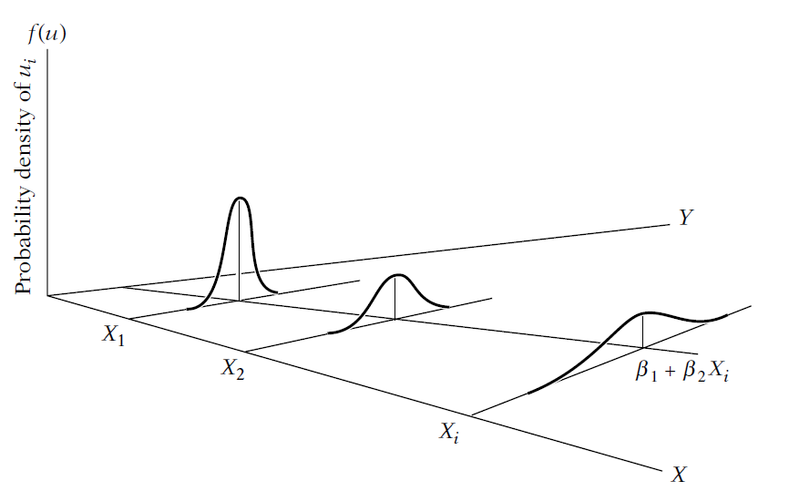

Linear regressions are the workhorse tool in econometrics
Simplicity: straightforward to understand, implement, and visualize.
Interpretability: coefficients have clear interpretations.
represents the change in the Y for a one-unit change in the X, holding all other variables constant.
Versatility: simple linear regression or multiple linear regression.
Assumptions: linearity, independence of errors, homoscedasticity, and normality of errors.
Baseline Model: You can compare the performance of more advanced models to linear regression.
Estimation: provides clear estimates of the coefficients’ confidence intervals and hypothesis testing.
Regression
In this setting, the variables \(y\) and \(x\) can have several names.
Y
X
Dependent variable
Independent variable
Explained variable
Explanatory variable
Response variable
Control variable
Predicted variable
Predictor variable
Regressand
Regressor
Regression
Broadly, we are interested in how y is explained by x?
\(y_i = \alpha + \beta_1 x_i + \epsilon\)
Perhaps \(\epsilon\) is the most important part of a regression.
The interpretation is “everything that is not explained by X and that explains Y”.
A comment
Usually, the literature uses \(\epsilon\) for the “estimated” residual.
And \(\mu\) for the “true” residual, which necessarily implies that the assumptions hold.
At the end od the day, you don’t need to worry to much with the notation of this term because we are always in the “estimated world”, and almost never in the “true world”.
The “true world” implies that you are studying the population or that you have a true random sample of the population
\(y_i = \alpha + \beta_1 x_i + \mu\)
Regression
Remember
\(y, x\), and \(\mu\) are random variables
\(y and x\) are observable
\(\mu\) and \(\beta\) are unobservable
\(\mu\) captures everything that determines y after accounting for x
Our goal is to estimate β
Regression
There are some assumptions/requirements about \(\mu\) in a OLS
First assumption
E(\(\mu\)) = 0
This is a simple assumption, not strong at all.
It simply assumes that the average of \(\mu\) is zero in the population.
Basically, any non-zero mean is absorbed by the intercept
Say that E(\(\mu\)) = k
We could rewrite \(\mu = k + w\), where E(w)=0
Then, model becomes \(y=(\alpha +𝑘) + \beta𝑥+𝑤\)
Intercept is now just (α + k), and error, w, is mean zero
Regression
Second assumption
E(\(\mu\)|x) = E(\(\mu\)) for all values of x
It says that the average value of \(\mu\) does not depend on the value of x (i.e., the slice of the population you are looking at).
We say that \(\mu\) is mean-independent of x.
This is true if the X and the \(\mu\) are independent to each other.
Implies that x and \(\mu\) are uncorrelated.
Conditional Mean Independence (CMI).
This is one of the keys assumption to causal inference.
library(tidyverse)set.seed(1)tb <-tibble(x =rnorm(10000),u =rnorm(10000),y =5.5*x +12*u # notice that I am defining the beta1 here. The 5.5 is the "true" beta we want to estimate.) reg_tb <-lm(y ~ x, data=tb) summary(reg_tb)
Call:
lm(formula = y ~ x, data = tb)
Residuals:
Min 1Q Median 3Q Max
-51.528 -8.152 -0.173 7.978 44.718
Coefficients:
Estimate Std. Error t value Pr(>|t|)
(Intercept) -0.04991 0.11890 -0.42 0.675
x 5.55690 0.11745 47.31 <2e-16 ***
---
Signif. codes: 0 '***' 0.001 '**' 0.01 '*' 0.05 '.' 0.1 ' ' 1
Residual standard error: 11.89 on 9998 degrees of freedom
Multiple R-squared: 0.1829, Adjusted R-squared: 0.1828
F-statistic: 2238 on 1 and 9998 DF, p-value: < 2.2e-16
Python
import pandas as pdimport numpy as npimport statsmodels.api as smimport matplotlib.pyplot as pltnp.random.seed(1)obs =10000data = pd.DataFrame({'x': np.random.normal(size=obs),'u': np.random.normal(size=obs),})data['y'] =5.5* data['x'] +12* data['u']X = sm.add_constant(data['x'])model = sm.OLS(data['y'], X).fit()print(model.summary())
OLS Regression Results
==============================================================================
Dep. Variable: y R-squared: 0.183
Model: OLS Adj. R-squared: 0.183
Method: Least Squares F-statistic: 2237.
Date: qua, 11 set 2024 Prob (F-statistic): 0.00
Time: 17:07:22 Log-Likelihood: -39049.
No. Observations: 10000 AIC: 7.810e+04
Df Residuals: 9998 BIC: 7.812e+04
Df Model: 1
Covariance Type: nonrobust
==============================================================================
coef std err t P>|t| [0.025 0.975]
------------------------------------------------------------------------------
const 0.1114 0.120 0.927 0.354 -0.124 0.347
x 5.6887 0.120 47.293 0.000 5.453 5.924
==============================================================================
Omnibus: 0.640 Durbin-Watson: 2.050
Prob(Omnibus): 0.726 Jarque-Bera (JB): 0.672
Skew: -0.012 Prob(JB): 0.715
Kurtosis: 2.968 Cond. No. 1.01
==============================================================================
Notes:
[1] Standard Errors assume that the covariance matrix of the errors is correctly specified.
Stata
setseed 1 setobs 10000 gen x = rnormal() gen u = rnormal() geny = 5.5*x + 12*u regy x
Number of observations (_N) was 0, now 10,000.
Source | SS df MS Number of obs = 10,000
-------------+---------------------------------- F(1, 9998) = 2206.80
Model | 327141.413 1 327141.413 Prob > F = 0.0000
Residual | 1482125.8 9,998 148.242229 R-squared = 0.1808
-------------+---------------------------------- Adj R-squared = 0.1807
Total | 1809267.22 9,999 180.944816 Root MSE = 12.175
------------------------------------------------------------------------------
y | Coefficient Std. err. t P>|t| [95% conf. interval]
-------------+----------------------------------------------------------------
x | 5.598296 .119172 46.98 0.000 5.364695 5.831897
_cons | -.0750109 .1217548 -0.62 0.538 -.3136748 .163653
------------------------------------------------------------------------------
library(tidyverse)set.seed(1)tb <-tibble(x =rnorm(10000),u =rnorm(10000),y =5.5*x +12*u # notice that I am defining the beta1 here. The 5.5 is the "true" beta we want to estimate.) reg_tb <-lm(y ~ x, data=tb) tb %>%lm(y ~ x, .) %>%ggplot(aes(x=x, y=y)) +ggtitle("OLS Regression Line") +geom_point(size =0.05, color ="black", alpha =0.5) +geom_smooth(method = lm, color ="black") +annotate("text", x =-1.5, y =30, color ="red", label =paste("Intercept = ", reg_tb$coefficients[1])) +annotate("text", x =1.5, y =-30, color ="blue", label =paste("Slope =", reg_tb$coefficients[2]))
Python
import pandas as pdimport numpy as npimport statsmodels.api as smimport seaborn as snsimport matplotlib.pyplot as plt# Create a scatterplot with the OLS regression line using Seabornsns.set(style='whitegrid')plt.figure(figsize=(7, 5))sns.scatterplot(x='x', y='y', data=data, color='black', alpha=0.5, s=5)sns.regplot(x='x', y='y', data=data, color='black', scatter=False, line_kws={'color':'black'})plt.title('OLS Regression Line')plt.annotate(f'Intercept = {model.params[0]:.2f}', xy=(-1.5, 30), color='red')plt.annotate(f'Slope = {model.params[1]:.2f}', xy=(1.5, -30), color='blue')plt.show()
Stata
setseed 1 setobs 10000 gen x = rnormal() gen u = rnormal() geny = 5.5*x + 12*u regy x predict yhat1 gen yhat2 = -0.0750109 + 5.598296*x predict uhat1, residual gen uhat2=y-yhat2 quisum uhat* twoway (lfity x, lcolor(black) lwidth(medium)) (scattery x, mcolor(black) msize(tiny) msymbol(point)), title(OLS Regression Line) quigraphexport"files/graph3.svg", replace
setseed 1 clearquisetobs 10000 gen x = rnormal() gen u = rnormal() geny = 5.5*x + 12*u quiregy x predict uhat1, residual predict yhat1 gen yhat2 = -0.0750109 + 5.598296*x gen uhat2=y-yhat2 sum yhat* uhat*
library(tidyverse)set.seed(1)tb <-tibble(x =rnorm(10000),u =rnorm(10000),y =5.5*x +12*u # notice that I am defining the beta1 here. The 5.5 is the "true" beta we want to estimate.) reg_tb <-lm(y ~ x, data=tb) tb <- tb %>%mutate(yhat1 =predict(lm(y ~ x, .)),yhat2 = reg_tb$coefficients[1] + reg_tb$coefficients[2]*x, uhat1 =residuals(lm(y ~ x, .)),uhat2 = y - yhat2 )tb %>%lm(uhat1 ~ x , .) %>%ggplot(aes(x=x, y=uhat1)) +geom_point(size =0.1, color ="black") +geom_smooth(method = lm, color ="black")
Python
import pandas as pdimport numpy as npimport statsmodels.api as smnp.random.seed(1)obs =10000x = np.random.normal(size=obs)u = np.random.normal(size=obs)y =5.5* x +12* uX = sm.add_constant(x)model = sm.OLS(y, X).fit()tb = pd.DataFrame({'x': x, 'u': u, 'y': y})tb['yhat1'] = model.predict(X)tb['uhat1'] = y - tb['yhat1']tb['yhat2'] = model.params[0] + model.params[1] * xtb['uhat2'] = y - tb['yhat2']model = sm.OLS(tb['uhat1'], sm.add_constant(tb['yhat1'])).fit()# Create a scatter plot with a regression linesns.set(style="whitegrid")plt.figure(figsize=(7, 4.5))sns.scatterplot(x='x', y='uhat1', data=tb, size=0.05, color='black', alpha=0.5)sns.regplot(x='x', y='uhat1', data=tb, scatter=False, color='black')plt.xlabel('x')plt.ylabel('uhat1')plt.title('Scatter Plot of uhat1 vs. x')plt.show()
Stata
setseed 1 setobs 10000 gen x = rnormal() gen u = rnormal() geny = 5.5*x + 12*u quiregy x predict yhat1 predict uhat1, residual twoway (lfit uhat1 x , lcolor(black) lwidth(large)) (scatter uhat1 x , mcolor(black) msymbol(point))quigraphexport"files/graph5.svg", replace

Properties of OLS
Let’s say you estimate a model and find the \(\hat{\mu}\).
If you calculate the correlation between the X and \(\hat{\mu}\), you will find zero.
This is by construction! It is not an evidence that CMI is nos violated.
In fact, the OLS “assumes” and “forces” zero correlation.
It is intuitive: if you are “forcing” zero correlation when the correlation is not in fact zero, your coefficients will be biased.
The previous graphs actually show zero correlation. But that is expected and does not suggest the model is not violating CMI.
At the end of the day, CMI is untestable and unverifiable.
Goodness-of-fit
Goodness-of-fit
Understanding what SSR, SSE and SST mean
SSE = Sum of Squares Explained = \(\sum_i^n(\hat{y_i}-\bar{y})^2\)
SSR = Sum of Squares Residuals = \(\sum_i^n\hat{\mu}^2\)
SST = Sum of Squares Total = SSE + SSR = \(\sum_i^n(y_i-\hat{y_i})^2\)
R-squared is simply the ratio of portion explained over the total that could be explained.
\[R^2 = \frac{SSE}{SST} = 1-\frac{SSR}{SST}\]
Goodness-of-fit

Goodness-of-fit
You can think this way:
If X does not explain Y, then the best predictor of Y is \(\bar{y}\). In that case, your model does not explain anything of Y, thus \(R^2\) is zero, and \(\hat{y_i}=\bar{y}\)
If X partially explains Y, then \(\hat{y_i} \neq \bar{y}\), meaning that \(\hat{y_i}\) has some inclination (like the figure next slide). This means that \(SSE>0\) and your \(R^2>0\) but \(R^2<1\)
Whatever is not explained by \(\hat{y_i}\) is left to \(\sum_i^2\hat{\mu}^2\), meaning that SSR will be non-zero.
The ratio of the portion that you can explain by \(\hat{y_i}\) over the total that is to be explained \(y_i-\hat{y_i}\) if the \(R^2\).
library(foreign) # importing dataset from a stata dta filemydata <-read.dta("files/CEOSAL1.dta")attach(mydata)model <-lm(salary ~ roe)salaryhat <-fitted(model) # Predict values for dependent variableuhat <-resid(model) # Predict regression residualssalarymean <-rep(mean(salary),length(salary)) # Generating the mean of salary # r-squared is simply the ratio of portion explained over total that could be explained - Understanding what SSR, SSE and SST mean plot(salary ~ roe)abline(lm(salary ~ roe), col ="blue")abline(lm(salarymean ~ roe), col ="red")
Python
import pandas as pdimport matplotlib.pyplot as pltimport numpy as npdata = pd.read_stata("files/CEOSAL1.dta")X = data[['roe']]y = data['salary']salarymean = np.repeat(y.mean(), len(y))X_mean = X.mean()y_mean = y.mean()slope = np.sum((X - X_mean) * (y - y_mean)) / np.sum((X - X_mean) **2)intercept = y_mean - slope * X_meansalaryhat = slope * X + intercept# Plotting the data and regression linesplt.scatter(X, y, alpha=0.7)plt.plot(X, salaryhat, color='blue', linewidth=2)plt.plot(X, salarymean, color='red', linewidth=2)plt.xlabel('roe')plt.ylabel('salary')plt.show()
library(foreign) # importing dataset from a stata dta filemydata <-read.dta("files/CEOSAL1.dta")attach(mydata)model <-lm(salary ~ roe)salaryhat <-fitted(model) # Predict values for dependent variableuhat <-resid(model) # Predict regression residualssalarymean <-rep(mean(salary),length(salary)) # Generating the mean of salary # r-squared is simply the ratio of portion explained over total that could be explainedssr <-sum(uhat^2)ssrB <-sum((salary - salaryhat)^2)sst <-sum((salary - salarymean)^2)sse <-sum((salaryhat - salarymean)^2)sse / sst
use"files/CEOSAL1.DTA" , replacequireg salary roe predict salaryhat , xbpredict uhat, residegen salarymean = mean(salary) egen sst = total((salary - salarymean)^2) egen ssr = total((salary - salaryhat)^2)egen ssrB = total(uhat^2) egen sse = total((salaryhat - salarymean)^2) di sse / sst
.01318862
Variance of coefficients
Variance of coefficients
When we estimate coefficients we have some “error of estimation”.
Basically, you are searching the “true” coefficient using a sample, which should be representative of the population but it is not the population itself.
This means that the coefficient estimated is estimated with error.
We would like (e.g., we will need) to impose some “structure” to that error.
Variance of coefficients
Standard error and T-stat
To assess if the variables are significantly related, you need to assess the significance of \(\beta\) coefficients.
Using the example from Wooldridge, we know that the Beta of ROE is 18.591, while the standard error of ROE is 11.123.
The standard error is a measure of the accuracy of your estimate. If you find a large standard error, your estimate does not have good accuracy.
Ideally, you would find small standard errors, meaning that your coefficient is accurately estimated.
However, you do not have good control over the magnitude of the standard errors.
Variance of coefficients
Standard error and T-stat
If you have a large standard error, probably you coefficient will not be significantly different from zero. You can test whether your coefficient is significantly different from zero computing the t-statistics as follows:
If \(t_{\beta}\) is large enough, you can say that \(\beta\) is significantly different from zero. Usually, \(t_{\beta}\) larger than 2 is enough to be significant.
Variance of coefficients
In the previous example, you can find the t-stat manually as follows (\(t_{\beta} =\frac{\hat{\beta}}{se(\hat{\beta})}\)):
library(foreign) # importing dataset from a stata dta filedata <-read.dta("files/CEOSAL1.dta")attach(data)# OLS modelmodel <-lm(salary ~ roe)# Extract the standard error of the coefficient for 'roe'summary(model)$coefficients["roe", "Std. Error"]
[1] 11.12325
R
#calculating manually# Extract the residualsresiduals <-resid(model)# Number of observations (n)n <-length(residuals)# Calculate the mean of the independent variable (roe)roe_mean <-mean(roe)# Calculate the sum of squared deviations of roe from its mean (SXX)SST <-sum((roe - roe_mean)^2)# Calculate the sum of squared errors (SSE)SSR <-sum(residuals^2)# Calculate the standard error of betaSd_beta <-sqrt(SSR / ((n -2)))# Calculate S.ESe_beta <- Sd_beta /sqrt(SST)# Print the standard error of betaprint(Se_beta)
[1] 11.12325
Python
import pandas as pdimport numpy as npimport statsmodels.api as smdata = pd.read_stata("files/CEOSAL1.dta")X = data['roe']y = data['salary']X = sm.add_constant(X) model = sm.OLS(y, X).fit()# Extract the standard error of the coefficient for 'roe'beta_se_summary = model.bse['roe']print("Standard Error (from summary):", beta_se_summary)
Standard Error (from summary): 11.123250903287634
Python
# Calculate it manually# Extract the residualsresiduals = model.resid# Number of observations (n)n =len(residuals)# Calculate the mean of the independent variable (roe)roe_mean = X['roe'].mean()# Calculate the sum of squared deviations of roe from its mean (SST)SST = np.sum((X['roe'] - roe_mean) **2)# Calculate the sum of squared errors (SSE)SSE = np.sum(residuals **2)# Calculate the standard error of beta (Sd_beta)Sd_beta = np.sqrt(SSE / (n -2))# Calculate SE_betaSE_beta = Sd_beta / np.sqrt(SST)print("Standard Error (manually calculated):", SE_beta)
Standard Error (manually calculated): 11.123250601798315
The larger \(\hat{\sigma}\) is, the larger the variance of \(\beta\). That is, the more “noise” in the association between x and Y, the harder it is to learn something about \(\beta\).
However, more variation in x, the larger the SST, so the smaller is the variance of \(\beta\).
What happens if \(\hat{\sigma}\) is not constant (for the values of x)?
In other words, how realistic is to assume that the variance in the errors is the same for all slices of x?
Can you think of an example where that may happen?
Robust standard errors
Earnings = f(education)
PhD have a higher variance of earnings than non-educated people.
Leveragge=f(Size)
It is quite possible that small firms will have less options of leverage than large companies.
This means that a sub-sample of large companies will have higher variance in the leverage decisions (and thus the error terms) than the sub-sample of small firms
Robust standard errors
One of the key assumptions in OLS estimators is homoscedasticity
That is, the assumption is that the variance of the errors is homoscedastic (constant variance in all slices of X).
It means that throughout all observations, the error term shows the same variance.
If errors are not homoscedastic, we have the heteroscedasticity problem.
Heteroskedasticity does not cause bias or inconsistency in the OLS estimators of the \(\beta\) like the OVB would.
It also does not affect the \(R^2\).
What Heteroscedasticity does is to bias the standard errors of the estimates.
Robust standard errors

Robust standard errors

Robust standard errors
Homoskedascticity = Constant \(\hat{\sigma}\) to all slices of X.
Heteroskedascticity = Non-constant \(\hat{\sigma}\) to all slices of X.
Without homoskedascticity, OLS no longer has the minimum mean squared errors, which means that the estimated standard errors are biased, which in turn creates bias in the t-stat and the inference you’ll make with your model.
This formula simply “includes” the heteroskedascticity in the calculation of \(Var(\hat{\beta_1})\), meaning this correct the estimated standard deviation to heteroskedascticity.
We call this correction as Robust Standard Errors (White Robust).
In other words, you should always use Robust Standard Errors. It is easy to use it with R.
Standard Error (non-robust): 11.123251
Standard Error (robust): 6.8294482
Robust standard errors
Notice that the standard errors have changed quite significantly in this example.
Usually, the robust standard errors are larger than the traditional ones in empirical works.
But, in this example, they are smaller.
Perhaps more importantly:
Once the S.e. change, you should expect that the t-stat of the estimates also change.
Final comment: robust standard errors are robust in the case of homoskedasticity.
Warning
Thus, you should always use robust S.E.
Clustered standard errors
Clustered standard errors
Almost always, someone will ask you whether you clustered your standard errors.
The intuition is the following:
When you do not cluster, you are assuming that all observations are independently and identically distributed (i.i.d.), which may or may not be true.
Imagine you are studying the effect of class size on students achievement.
How much of a effect would have the teacher of a class?
In this design, the teacher influences the achievement of all the students in the same class, and one teacher cannot be at two classes at the same time.
Thus, it would be wise to cluster the errors at the class-level. This assumes that the residual of each individual is clustered with the other individuals in the same class.
In principle, clustering solves any form of dependence of the residuals in your data.
Clustered standard errors
In corporate finance/accounting research panel data research, the tradition is to cluster at the firm-level.
The reason is that the observations of the same firm are not independent trough time, thus are correlated.
But, there is a lot of debate about this decision.
The tip is to cluster where the randomness exist. That is quite subjective. In the class size example, the randomness comes out of the teacher, since each teacher has their own ways of teaching (materials, resources, etc.).
But, it is a good practice to stress this decision a bit in your own research by also showing results with clustered s.e. at the industry-level.
Final tip: usually the minimum number of cluster is about 30. Less than that might be insufficient (but, again, the guidance in this topic is very subjective).
Clustered standard errors
The clustered standard errors are different because I am fabricating the clusters here for the sake of the coding.
In your real research, you would have the cluster at hands.
import pandas as pdimport statsmodels.api as sm# Read the datasetdata = pd.read_stata("files/CEOSAL1.DTA")# Create a new variable 'cluster' with cluster numbers ranging from 1 to 35data['cluster'] =list(range(1, 36)) * (len(data) //35)
Length of values (175) does not match length of index (209)
Python
# Fit the linear regression modelmodel = sm.OLS(data['salary'], sm.add_constant(data['roe'])).fit()# Compute robust standard errorsrobust_model = model.get_robustcov_results(cov_type='HC3')SE_beta_robust = robust_model.cov_params().loc['roe', 'roe'] **0.5
'numpy.ndarray' object has no attribute 'loc'
Python
# Fit the linear regression model with clustered standard errorsmodel_clustered = sm.OLS(data['salary'], sm.add_constant(data['roe'])).fit(cov_type='cluster', cov_kwds={'groups': data['cluster']})
'cluster'
Python
# Extract the clustered standard errors for 'roe'clustered_se = model_clustered.HC3_se.loc['roe']
name 'model_clustered' is not defined
Python
print("Robust Standard Error (HC3):", SE_beta_robust)
Robust Standard Error (HC3): 6.899433834797476
Python
print("Clustered Standard Error (HC3):", clustered_se)